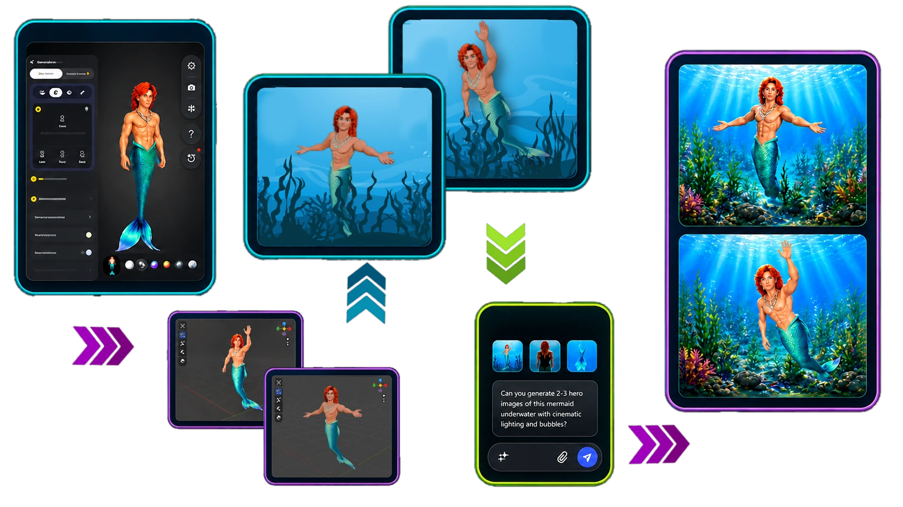

REFERENCE + ROUGH DIRECTION
I collect visual references and build the shot myself first. That might mean cutting together rough pieces of several images, making a quick sketch, or photographing a drawing.
ABOUT / CHRISTOPHER TYLER
Creative production at the intersection of AI, motion, storytelling and digital experiences.
CINAEDVS STUDIOS ↗I work across creative AI, visual storytelling, interactive content and digital production.
My projects range from AI-assisted cinematic sequences and game cutscenes to promotional experiences, internal AI launches and purpose-built creative tools. I am particularly interested in turning generative tools into practical production workflows — combining prompting, iteration, consistency, motion, editing and reusable assets to create finished outputs rather than isolated experiments.
Alongside creative work, I bring an operational mindset: understanding the audience, structuring processes, testing tools, documenting what works and making new technology easier for other people to use.
For independent creative work, I use CINAEDVS Studios as the studio name representing my projects.
PROCESS + TOOLS
I use AI as part of a wider production process, not as a substitute for the creative decision. I usually establish the composition visually first — through references, rough compositing, sketches, screenshots or 3D posing — then use generative tools to clean, refine, extend and animate that direction.
01 / HOW I WORK
The exact tools change by project, but the workflow stays broadly the same: define the result first, generate selectively, then spend the time refining what actually makes the final cut.
I collect visual references and build the shot myself first. That might mean cutting together rough pieces of several images, making a quick sketch, or photographing a drawing.
I feed that rough visual into an image model to create a clean frame that follows the composition I already established, rather than asking the model to guess everything from text.
Once the look is established, I create the other poses, camera angles and start/end frames needed for the sequence, keeping the visual direction consistent between shots.
The controlled keyframes become the basis for generated motion. Starting and ending states are defined visually so the video model has clearer boundaries to work within.
I assemble the clips in Adobe Premiere Pro or CapCut, then adjust timing, pacing and shot order until the sequence works as a whole.
Dialogue, sound design, music and final audio finishing are added after the visual edit is established, using ElevenLabs, Suno, BandLab and Adobe Audition.
02 / PROBLEM SOLVING
One recurring challenge is getting a model to follow an exact pose. Rather than repeatedly regenerate and hope for the right result, I build a stronger visual instruction.
HYBRID 2D + 3D WORKFLOW
If a generated character needs a very specific pose, I can take a clean image of that character into Tripo, create a 3D version, pose the model manually and capture the exact angle I need.
I then composite that posed reference over the target frame and use the rough composite as the visual guide for regeneration. It solves the pose through art direction instead of increasingly complicated text prompts.

BATCH PRODUCTION: When repetitive asset preparation starts slowing a project down, I use tools I built in Organon for asset separation, batch resizing, colour/transparency adjustments, format conversion and animation preparation.
OPEN ORGANON ↗03 / TOOL ECOSYSTEM
I move between tools depending on the problem rather than forcing every project through one platform or model.
ChatGPT · Gemini · Leonardo AI · Vidu · Runway · Magnific AI · OpenArt · Lumina · BytePlus
Seedream · Seedance · Kling · LTX · Hailuo · Veo · Nano Banana · GPT Image
Adobe Premiere Pro · CapCut
Pixlr · Adobe Photoshop · PaintShop Pro
Blender · 3ds Max · Tripo · Meshy
ElevenLabs · Suno · BandLab · Adobe Audition
ChatGPT · Gemini · Claude · Perplexity · Notion
Organon · browser-based batch utilities · asset preparation · workflow automation